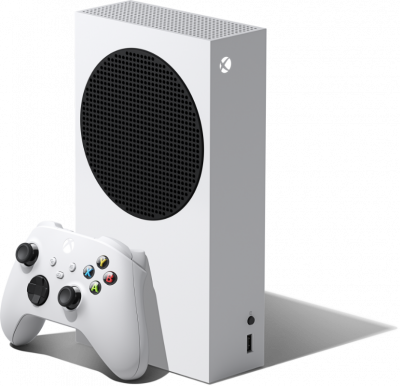

|
PROCESADOR CPU: CPU Zen 2 personaliza de 8 núcleos a 3,8 GHz (3,66 GHz con SMT)MEMORIA Y ALMACENAMIENTO: Memoria. GDDR6 de 16 GB con bus de 320 bits de anchoFUNCIONALIDADES DE VIDEO: Resolución de juego. Auténtico 4K.PUERTOS Y CONECTIVIDAD: HDMI.Dimensiones 15,1 cm x 15,1 cm x 30,1 cm. |
 |
GPU: GPU de 4 TERAFLOPS, 20 CU a 1,565 GHz con RDNA 2 personalizadaMEMORIA:Bus de 10 GB GDDR6 de 128 bits de anchoAncho de banda 8 GB a 224 GB/s, 2 GB a 56 GB/sDimensiones 65 x 151 x 275 mm
|